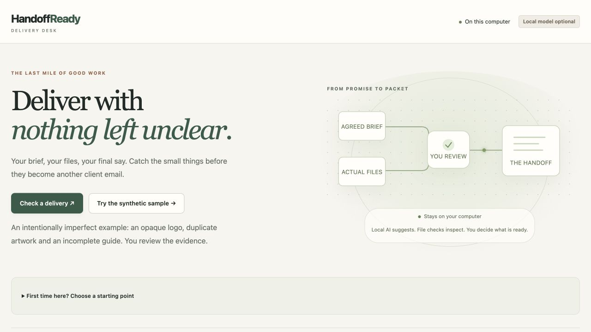
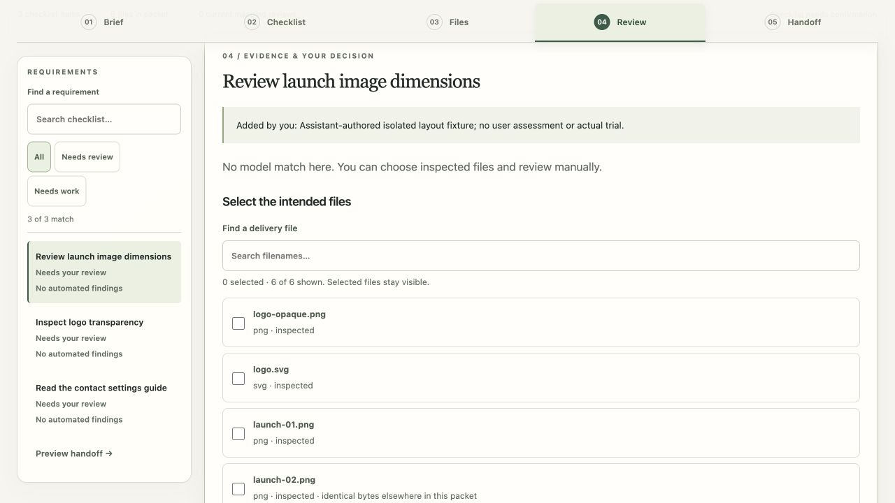

Actual interface capture from the current build. The standalone sample below is synthetic; it is separate from the recorded Switch owner rehearsal.

Current local interface · synthetic demonstration · 6 November 2026
THE PART THAT MATTERS
A correction should change the review.
Explore the five stages. These explanations describe the implemented workflow; the controls here do not perform live agent actions.
01 / RECEIVE
Received does not mean approved.
A Switch-managed agent stages the actual attachment bytes. The local lead previews the changes and explicitly confirms the complete packet before reviewing it.
The agent cannot confirm the packet for you.
FACTS, PROPOSALS, JUDGMENT
Three different things. One clear record.
File checks report narrow technical facts. An agent can suggest questions and associations. The reviewer decides what the current evidence supports.
Changed packets invalidate earlier reviews.
Private reasoning stays separate from deliberate public notes.
A send permission is not proof of delivery.
Screenshots show an assistant-authored layout fixture, with no saved user assessment.

Current review interface · synthetic layout fixture
EVIDENCE WITH ITS LIMITS
Show what happened. Say what remains.
OBSERVED OWNER REHEARSAL
Room → correction → record
One assisted synthetic Discord/Switch loop reached a fresh owner review and a returned 2,033-byte Markdown record. The downloaded bytes matched; the owner confirmed the destination.
The 6 November publication checks passed 541 backend tests; the interface checkpoint passed 146 tests, production build and formatting. Separate authored synthetic evaluation recorded 69 assertions at its preserved earlier snapshot.
A separate external participant trial and a new narrated demo video remain pending. Tests do not establish customer benefit, general model accuracy or client acceptance.
The inherited HandoffReady review engine is extended with Switch/Discord coordination, durable intake, contextual clarification and supervised return. Product direction and owner decisions were human-led; AI agents substantially assisted implementation, testing and writing.
Local review evidence is unencrypted. Connected messages and agent context may be processed by chat and AI providers. Original files are separate from the shared Markdown record.